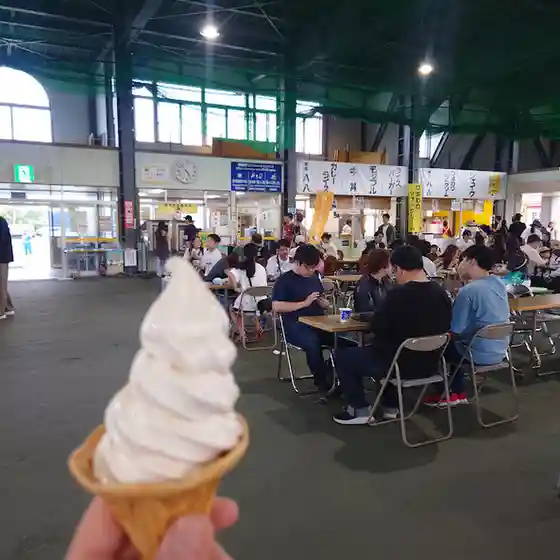
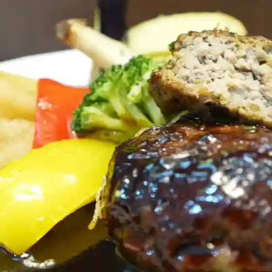
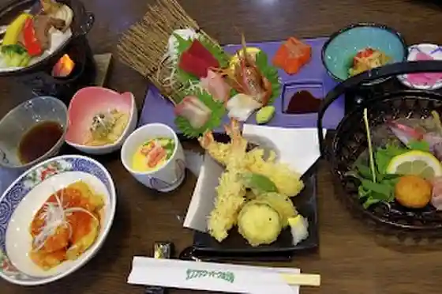
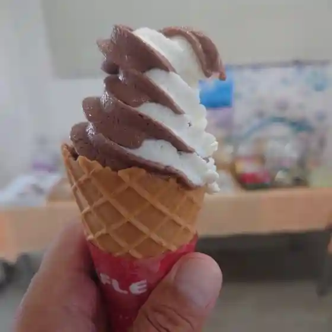
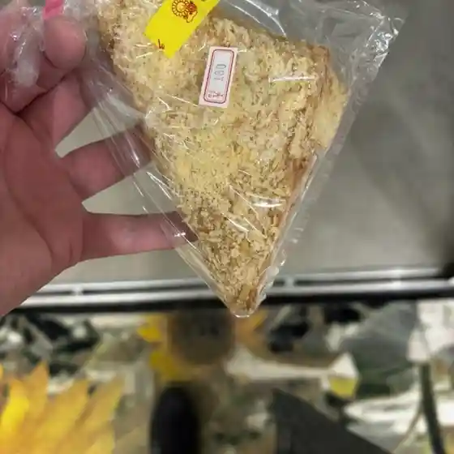
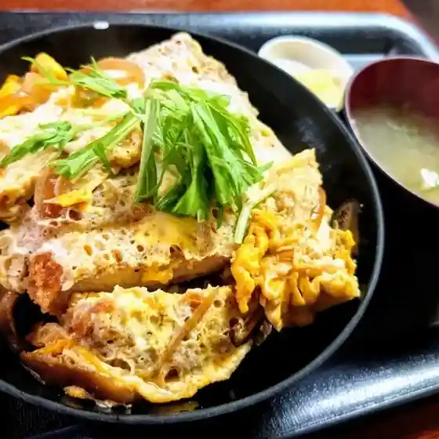
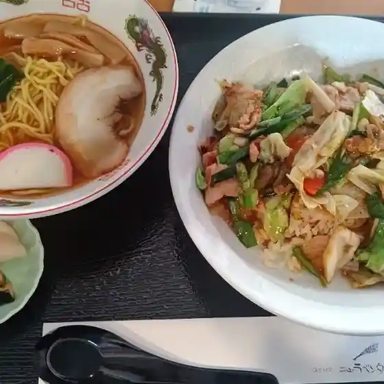

Hokuryu
Hokuryu · Hokkaido
Hokuryu
Highlighted on the Hokkaido map.
Stay
サンフラワーパークホテル 北竜温泉
Sanfurawaapaakuhoteru Hokuryuu Onsen
Dining
八八

Hachi Hachi
レストラン 風車

Resutoran Fuusha
サンフラワーパークホテル

Sanfurawaapaakuhoteru
北竜町農畜産物直売所 みのりっち北竜

Hokuryuu Machi Nouchikusan Mono Chokubai Tokoro Minoritchi Hokuryuu
道の駅 サンフラワー北竜

Michi No Eki Sanfurawaa Hokuryuu
お食事処 向日葵

O Shokuji Tokoro Himawari
川甚

Kawa Jin
龍彩

Ryuu Sai
ココワ
Kokowa
次郎長食堂
Jirochou Shokudou
味処 八八
Ajidokoro Hachi Hachi
kitchen 晴晴
Kitchen Sei Sei
kitchen晴晴
Kitchen Sei Sei
黒千石事業協同組合
Kuro Sengoku Jigyou Kyoudoukumiai
Sights
Hokuryu Himawari Village
Hokuryu Himawari Village